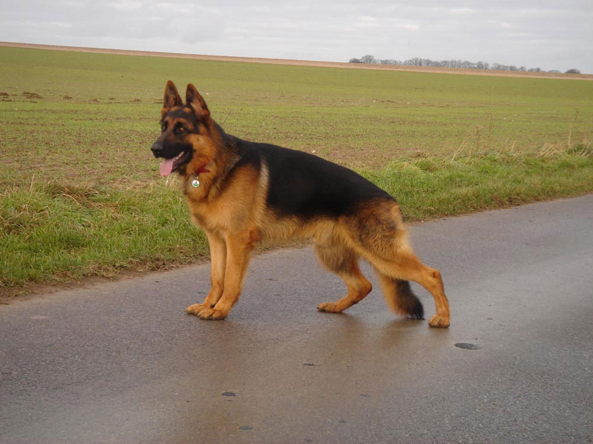

Мухтар

Каждому человеку нравятся разные домашние животные. Думаю, даже те, у кого по какой-либо причине нет питомцев, имеют свои предпочтения. Одному нравятся коты, другому — попугайчики или хомячки. Я обожаю собачек. Считаю, что эти животные являются лучшими друзьями людей.
Собака – это мое любимое животное. Все очень хорошо знают пословицу, в которой говорится: «Собака – друг человека». Это действительно так. К примеру, можно привести массу случаев, когда собака спасала человека в экстренных ситуациях. Собаки - неимоверно умные животные, которые понимают своего хозяина с полуслова. Есть такие породы наших младших друзей, которые работают в полиции, спасательной службе, пограничной службе.
Они очень хорошо знают свою работу, которую выполняют довольно хорошо. Их роль, в этом случаи, очень важна, поскольку собаки, с помощью нюха, могут найти крайне опасные предметы и вещества.
Мою собаку зовут Мухтар. Он очень любит бегать наперегонки. У него длинный хвостик и длинные ушки. Его порода – овчарка. У него большие глазки, острые зубки и черный носик. Когда Мухтар скулит, он хочет выйти в огород чтобы там бегать.

Я в основном его зову муха. Он отзывается на эту кличку значит понимает, что обращаются именно к нему. Муха у нос появился щенком. Он был такой маленький, я даже видела как у него открываются глазки. Они же рождаются совсем слепые.
Видела его первые шаги, это было так смешно смотреть, как он переваливался с боку на бок, как мишка косолапый.

Когда он чуть-чуть подрос я его начала учить всякими командами. Я его учила ходить со мной рядом, когда я ему отдавала команду, он её выполнял, это было так здорово и ему тоже нравилось. Он даже научился приносить палку, а больше всего он любил играть мячиком. Муха приносил мне его и просил с ним поиграть.
Мы с ним постоянно ходом на прогулки мы бегаем друг за другом. Ему так нравиться. Когда я от него прячусь, а он не может меня найти Муха начинает гавкать, наверно можно сказать и так выходи я сдаюсь. Я так его люблю, своего Мухтара.
Интересные факты о немецких овчарках: